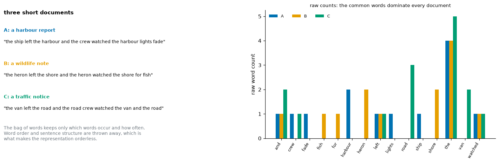
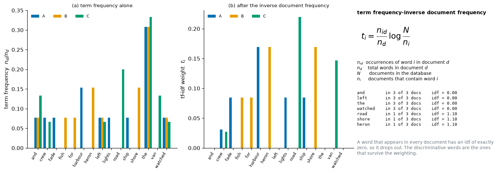
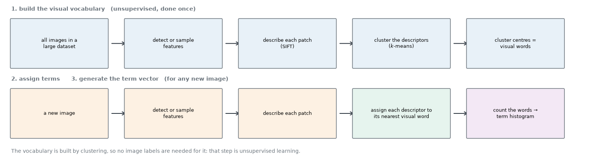
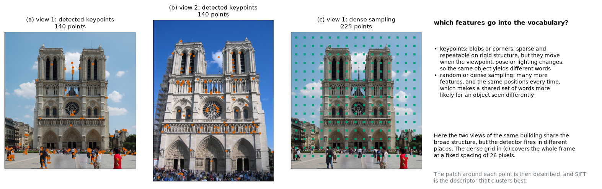
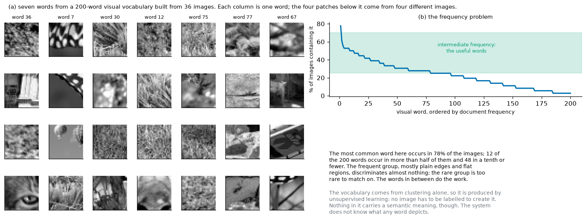
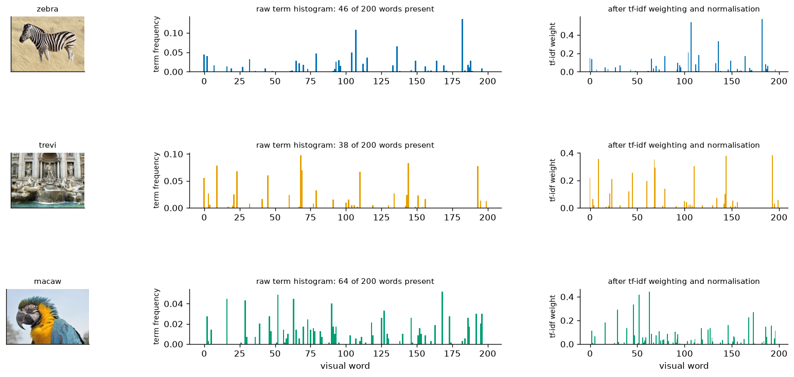

Lesson 06.01
The bag of features representation
An orderless, high-level description of an image: the bag of words and tf-idf weighting, then building a visual vocabulary by clustering descriptors, assigning terms and forming the term histogram.
Learning outcomes
After this lesson you should be able to:
- explain what makes the bag of features an orderless representation, and what that costs;
- compute a tf-idf weight and say why common words must be down-weighted;
- state the three stages of the bag of features algorithm;
- compare keypoint, random and dense feature sampling for building a vocabulary;
- describe how clustering produces visual words, and what the frequency problem is.
Introduction
The bag of features is a high-level representation of an image that can be used for image classification or image retrieval. It is based on the same principle as the bag of words representation used for matching documents.
It is an orderless representation. Large-scale spatial information, relative scale and orientation information are all discarded in constructing it. Despite that loss the representation still works very well for image classification and scene recognition. It is not suited to object detection and localisation, because a representation that has thrown away where things are cannot say where an object is.
Bag of words
Using the bag of words representation, similar documents are matched by comparing the frequency of the words used in each one. The bag is a list of the words that appeared in a document together with how often they appeared. It is unordered, so sentence structure is not captured, only word frequency.
Very common words such as "the", "and" and "it" have a high frequency in every document. Their frequency must be penalised or reduced so that the more discriminative words stand out.

tf-idf
A weighting is applied to each word to reduce the effect of the common ones. The usual choice is tf-idf, term frequency-inverse document frequency. A document $d$ is represented by a vector $V_d = (t_1, \ldots, t_i, \ldots, t_k)$ of weighted word frequencies, where
$$t_i = \frac{n_{id}}{n_d} \log \frac{N}{n_i}. \tag{1}$$
The expression has two parts:
- the term frequency $n_{id}/n_d$, the number of occurrences of word $i$ in document $d$ divided by the total number of words in that document;
- the inverse document frequency $\log(N/n_i)$, where $N$ is the total number of documents in the database and $n_i$ is the number of them that contain word $i$.
When a word occurs in a large fraction of the database the second term is small, so that word is down-weighted. A word that occurs in every document has $n_i = N$ and therefore a weight of exactly zero.

The bag of features algorithm
The algorithm has three stages.
- Build a visual vocabulary. The visual vocabulary is a list of visually similar image patches drawn from all the images in a database. These visual words, or codewords, are the equivalent of the words in a bag of words. The vocabulary is built by detecting or sampling image features across the whole database, describing them with a descriptor such as SIFT, and then applying a clustering algorithm to group similar descriptors together. Each cluster centre is one visual word.
- Assign terms. Features are extracted and described from a new image, and each descriptor is matched to the nearest visual word in the vocabulary. The image becomes a list of codewords.
- Generate the term vector. The counts of each individual visual word in the image form a histogram. As with the bag of words, a weighting can be applied to reduce the effect of very common visual words.

Building the visual vocabulary
Which features?
Image patches around keypoints are the obvious first choice. The keypoints correspond to blob regions or corners depending on the detector. They are sparse and well localised, but they are also a disadvantage: when the pose, viewpoint or illumination of an object changes, the detector fires in different places, so the same object yields a different set of visual words.
Features can instead be extracted randomly or by dense sampling on a uniform grid. Both generate many more features than a keypoint detector does, and dense sampling puts them in positions that do not depend on the image content at all. That increases the likelihood of finding a common set of visual words for an object photographed in a different pose or under different light.
Whichever way the features are chosen, the patch around each one is converted into a descriptor. The SIFT descriptor has been found to be a better input to the clustering stage than simpler descriptors or raw pixels.



Clustering
After describing the patches, a clustering algorithm finds cluster centres that correspond to visually similar image features. These are the visual words. Clustering is what limits the number of distinct features in the representation to something manageable.
k-means is the default choice. As Jurie and Triggs showed, it is not necessarily the best, particularly when features are densely sampled: the feature space then contains a large number of very common features, and less frequent but more discriminative features may fail to form distinct clusters and be lost from the representation.
![Clustering descriptors into visual words. Every descriptor from every image in the dataset is a point in a 128-dimensional space, drawn here on its first two principal components (a). k-means finds cluster centres, and each centre is a visual word (b). Reading the patches that belong to one cluster back out of the images shows what the word represents: an edge at a particular orientation, a corner, a texture (c). Clustering is what limits the representation to a manageable number of distinct features.](figures/descriptor_clustering.png)


.jpg){kind=link}
.jpg){kind=link}
.jpg){kind=link}


.jpg){kind=link}
.jpg){kind=link}
.jpg){kind=link}

The final vocabulary
With a large dataset of training images a vocabulary of visual words can be created. It generally contains a wide variety of edges, lines and stripes together with some more complex features.
The frequency problem of the bag of words occurs here too. Common features such as plain edges can dominate the vocabulary while carrying almost no discriminative information, because they are seen in every image. Ideally we want visual words of intermediate frequency: common enough to recur, rare enough to discriminate.
Note that the vocabulary is formed by clustering, which is unsupervised learning. No labelling or annotation of the training images is needed to create it.

,_street_scene.jpg){kind=link}


.jpg){kind=link}


.jpg){kind=link}


Assigning terms and the final histogram
A bag of features can now be determined for any image using the vocabulary. Features are detected or sampled, descriptors are computed for the regions around them, and each descriptor vector is matched to the vocabulary to find which cluster it belongs to. The frequency of each visual word in the image forms a histogram.
Every image is therefore represented by a histogram, and with a large vocabulary that histogram is sparse: many words have a count of zero. The histogram can be structured in three ways:
- raw counts of each visual word;
- tf-idf weighting, exactly as for documents;
- a fully binary representation, used particularly for large sparse vectors, where the presence of a word is more informative than its actual count.

The next lesson uses this representation for classification and for large-scale image retrieval.
Check your understanding
1. The bag of features is described as an orderless representation. What does that mean?
That is why it works for classification and scene recognition but is unsuited to object detection and localisation.
2. In the tf-idf weight, what is the effect of the inverse document frequency term?
The term frequency alone still lets the common words dominate; the idf is what suppresses them.
3. What are the visual words, or codewords, in a bag of features?
Each descriptor from a new image is then assigned to its nearest cluster centre.
4. Why can dense or random sampling be preferable to a keypoint detector when building a vocabulary?
A detector fires in different places when the viewpoint changes, so the same object can produce a different set of visual words.
5. Building the visual vocabulary is which kind of learning?
That is one of the practical advantages: no annotation is needed to build the vocabulary.
6. Which descriptor is usually the best input to the clustering stage?
SIFT has been found more robust for clustering than simpler descriptors or raw pixels.
7. What is the frequency problem in a visual vocabulary?
It is the same problem the tf-idf weighting solves for the bag of words.
8. With a large vocabulary, the term histogram for one image is typically
That sparsity is why a purely binary representation is often used for very long vectors.
Image credits
- Agathe the cat, Pierre Tribhou, CC BY-SA 4.0
- Lama LLama Alpaca 06, Federico Candoni, CC BY-SA 4.0
- Niger, Arlit (18), street scene, NigerTZai, CC BY-SA 4.0
- Balloony sky, Amir Mirzanejad, CC BY 4.0
- Flemish bond at the Georgian House, Kilkenny, A.-K. D., CC BY-SA 4.0
- Butterfly 56 (4529057073), LaggedOnUser, CC BY-SA 2.0
- Six weeks old cat (aka), André Karwath, CC BY-SA 2.5
- Chairs in The Danish Museum of Art & Design, Helen Ilus, CC BY-SA 4.0
- Cow in a field, Muhajir.up, CC BY-SA 4.0
- Fietspad naar campus Diepenbeek, Bios, CC BY-SA 3.0
- Dairy cows on pasture in Ireland, Martin Abegglen, CC BY-SA 2.0
- Nuts, Apples & Oranges, Zeynel Cebeci, CC BY-SA 4.0
- Bell alfa vysocina, Zdeněk Vacek, Attribution
- Wildlife (Horses in France), Fitindia, CC BY-SA 4.0
- KittenHiding, Allmightyduck, CC BY-SA 3.0
- YellowLabradorLooking new, Djmirko, CC BY-SA 3.0
- Panorama Liege North, A.Savin, CC BY-SA 3.0
- Lion d'Afrique, Clément Bardot, CC BY-SA 4.0
- Ara ararauna (Linnaeus 1758), Michael Gäbler, CC BY 3.0
- Wiki cars 257, Karrmann, CC BY-SA 3.0
- Monarch butterfly in BBG (84685), Rhododendrites, CC BY-SA 4.0
- Notre-Dame de Paris 2792x2911, Jérôme Blum, CC BY-SA 2.0 fr
- Notre Dame Cathedral - Paris, Christopher Kramer, CC BY 2.0
- Gray office building facade (Unsplash), Echo Grid echogrid, CC0
- Eastern screech owl (44327), Rhododendrites, CC BY-SA 4.0
- All Gizah Pyramids, Ricardo Liberato, CC BY-SA 2.0
- Rubics Cube, Byjuvtvm, CC BY 3.0
- Le sacre Coeur, Tonchino, CC BY-SA 2.5
- 7 sau på voll, Øyvind Holmstad, CC BY-SA 4.0
- Great Sphinx of Giza - 20080716a, Barcex, CC BY-SA 3.0
- Starfish, Dana Hutchinson, CC BY 3.0
- Atlas Maritime's Mitera Marigo Aframax Oil Tanker, Pennykall, CC BY-SA 3.0
- Trevi fountain in Rome, High Contrast, CC BY 3.0 de
- Detail Neptune Trevi fountain Rome Italy, Jebulon, CC0
- Garage Workbench Clutter, Circacies, CC BY-SA 4.0
- Common zebra 1, Gusjer, CC BY 2.0
Other figures are generated from synthetic data by the lesson engines.